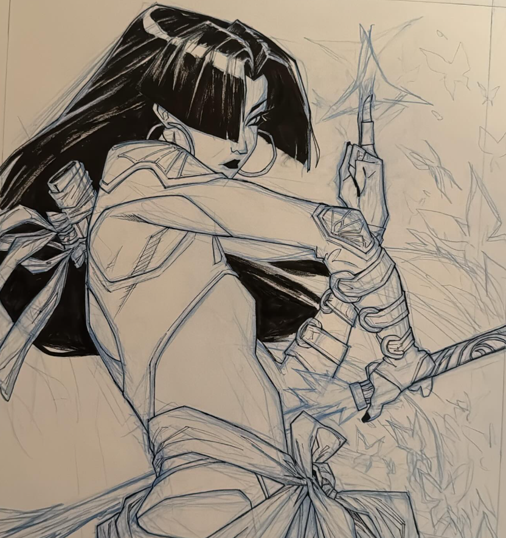
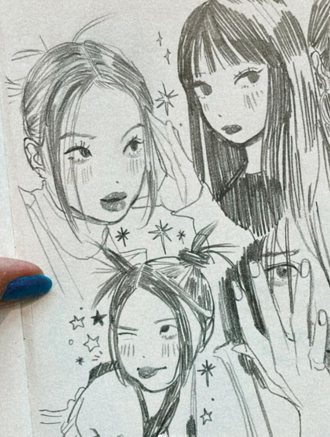

rinotuna
Their grasp on illustration and conceptual character
design is something I admire greatly and strive to
emulate within my own art.

KRIS ANKA
Kris is an amazing artist and illustrator, someone I look up to as one of my core inspirations,
and one day I hope to illustrate as well as he does. I want to go into Concept Art because of his work.

GOWAWAA
Gowawaa's grasp on croquis art and drawing from still life is
something I wish to emulate in my own illustrations.
Their style is clean and aesthetically pleasing while staying simple.